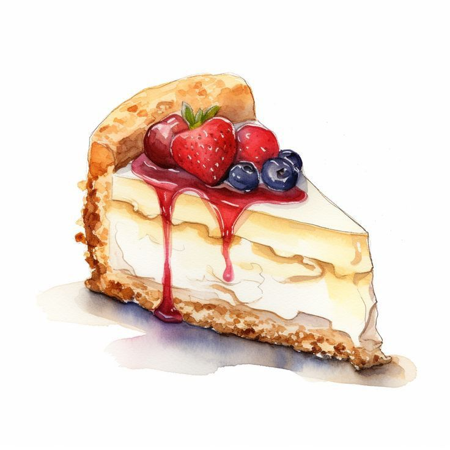

Cheese Cake

Cheesecake is a rich, creamy dessert made mainly from cream cheese, sugar, and eggs, usually on a crust of crushed cookies or graham crackers. It can be baked or unbaked and is often chilled before serving, known for its smooth texture and decadent flavor.
Ingredients
- Cream cheese
- Sugar
- Eggs
- Sour cream
- Vanilla extract
- Butter
- Graham crackers
Steps
- Preheat the oven to 325°F (163°C) and grease a springform pan.
- Crush the graham crackers and mix with melted butter to form the crust.
- Press the crust into the bottom of the pan and bake for 10 minutes.
- Beat the cream cheese and sugar until smooth and creamy.
- Add the eggs, one at a time, mixing well after each addition.
- Stir in the sour cream and vanilla extract until fully combined.
- Pour the filling over the crust and smooth the top.
- Bake for 50-60 minutes, or until the center is set but slightly wobbly.
- Turn off the oven and let the cheesecake cool inside for 1 hour.
- Chill the cheesecake in the refrigerator for at least 4 hours before serving. Enjoy!
Back to Home